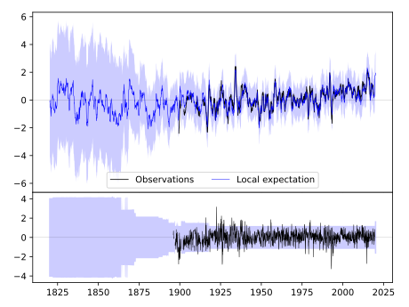
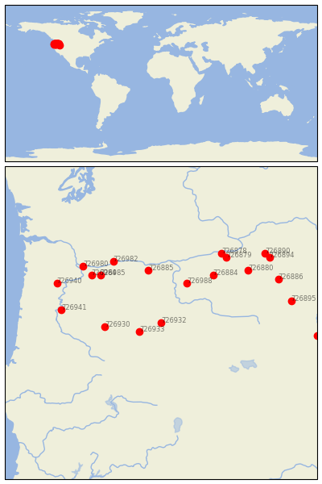
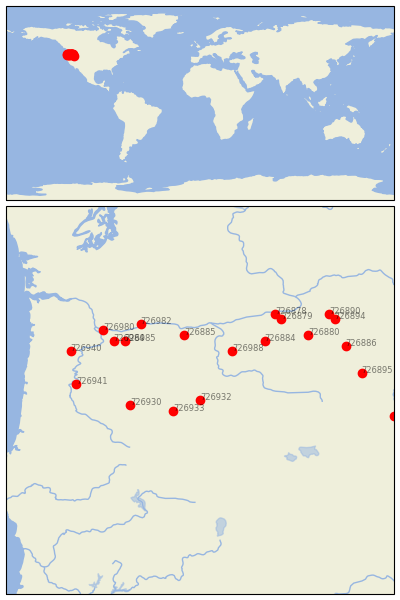

PRINEVILLE [USA]

 
| Neighbour | Name | Country | Distance | Lon/Lat | Years |
|---|
| 726932 | PRINEVILLE | USA | 0 | -120.8, 44.3 | 1896-2019 |
| 726933 | BEND | USA | 45 | -121.3, 44.1 | 1897-2019 |
| 726930 | MCKENZIE BRG RS | USA | 104 | -122.1, 44.2 | 1893-2020 |
| 726988 | CONDON | USA | 110 | -120.2, 45.2 | 1893-2019 |
| 726885 | DUFUR | USA | 135 | -121.1, 45.5 | 1893-2019 |
| 726884 | HEPPNER | USA | 154 | -119.6, 45.4 | 1889-2019 |
| 726985 | HEADWORKS PORTLAND W | USA | 164 | -122.2, 45.4 | 1893-2019 |
| 726984 | VANCOUVER 4NNE | USA | 175 | -122.4, 45.4 | 1900-1990 |
| 726982 | CASCADE LOCKS | USA | 178 | -121.9, 45.7 | 1891-1954 |
| 726941 | ALBANY | USA | 185 | -123.1, 44.6 | 1887-1963 |
| 726980 | PORTLAND, OREGON | USA | 202 | -122.6, 45.6 | 1873-2020 |
| 726879 | HERMISTON 1 SE | USA | 204 | -119.3, 45.8 | 1893-2019 |
| 726880 | PILOT ROCK 1 SE | USA | 206 | -118.8, 45.5 | 1890-2020 |
| 726878 | UMATILLA | USA | 209 | -119.4, 45.9 | 1902-1965 |
| 726940 | MC MINNVILLE | USA | 214 | -123.2, 45.2 | 1890-2020 |
| 726886 | LA GRANDE | USA | 240 | -118.1, 45.3 | 1911-1965 |
| 726895 | BAKER CITY AP | USA | 244 | -117.8, 44.8 | 1893-2019 |
| 726894 | WESTON | USA | 257 | -118.3, 45.8 | 1891-1954 |
| 726890 | MILTON FREEWATER | USA | 259 | -118.4, 45.9 | 1872-2019 |
| 726891 | VALE | USA | 289 | -117.2, 44.0 | 1892-2019 |